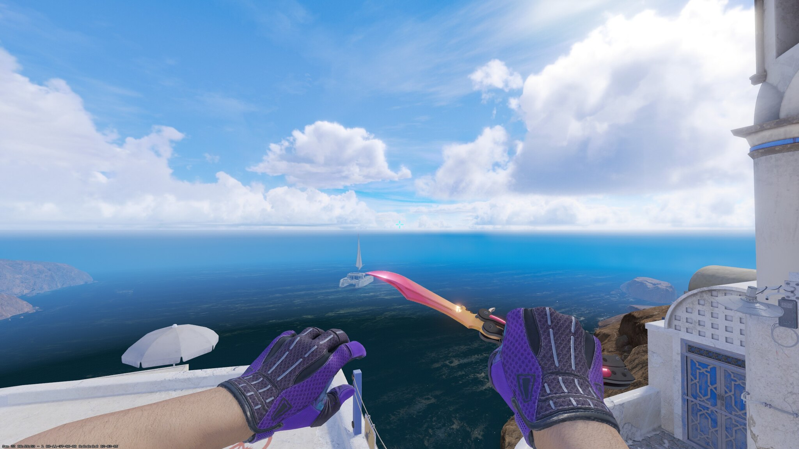
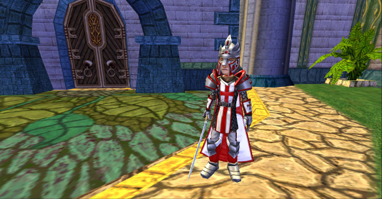
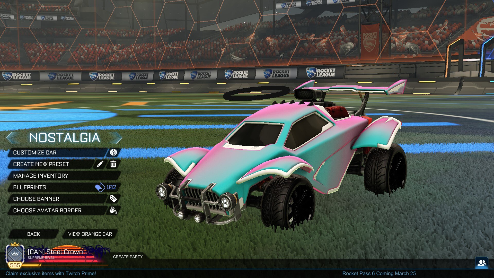

- Amazing gradient of sunset colors
- Fantastic inspect animation
- Has a nice size so it isn't too distracting

- Majestic styling with ties to Knights
- Royal and achieved only by getting warlord rank in PvP
- Able to be paired with other armor sets

- Clean deep black that goes with everything
- Fantastic symmetrical pattern which doesn't clash
- Expensive and minimalistic making it highly valued

- Filigree inspired design proclaiming royalty
- Ultra rare with almost none dropped
- Minimalist beauty with fine details

- Incredible copy right history among the community
- Incredibly rare with no way to obtain it besides trading
- Commands power and legacy